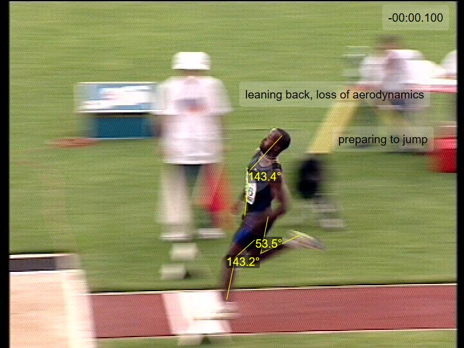
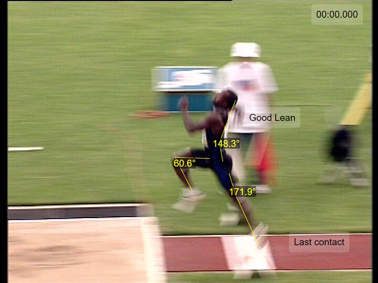
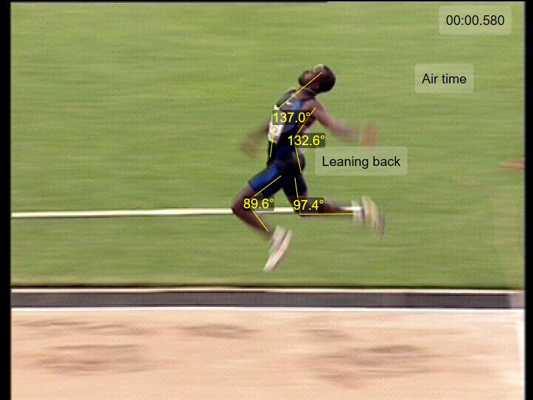
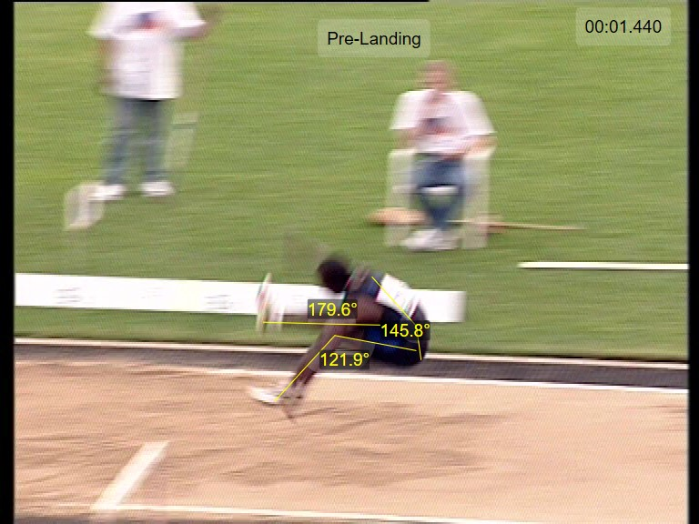

Video Analysis
The project focused on using Dartfish video analysis software to study human movement, with a specific emphasis on the long jump. The task involved capturing key moments from an athlete's performance and applying biomechanical analysis techniques to evaluate their form and technique. This process included selecting video frames that represented important phases of the jump—such as takeoff, flight, and landing—and then using Dartfish’s features to analyze joint angles, posture, and motion timing.
Throughout the project, I explored Dartfish's various tools, including angle measurement, timing functions, annotation features, and video splicing. These tools enabled me to visually break down complex movements into more manageable and interpretable components. By analyzing the long jump frame-by-frame, I gained insights into the technical demands of the sport and learned how software like Dartfish can play a crucial role in improving athletic performance through detailed feedback.
Below I'll show some photos of the still shots/analysis!
Analysis 1
Analysis 2
Analysis 3
Analysis 4
This is the video I analyzed, unfortunately, I don't have the analysis on the video, since I no longer have access to the subscription/account.
One of the most valuable skills I developed was the ability to apply biomechanical concepts to real-world performance analysis. Measuring joint angles during specific phases of the jump helped me understand how proper alignment and technique can enhance performance and reduce injury risk. For example, observing how the athlete leans back during air time or how their knee angle changes before landing gave me practical insight into sport-specific movement patterns.
Additionally, I became more confident in using Dartfish as a tool for objective feedback. Being able to pause, annotate, and compare movements made it easier to identify areas where technique could be optimized. This kind of analysis can be particularly useful for coaches and rehabilitation professionals who rely on visual data to support decision-making and training plans.
Overall, this experience broadened my understanding of how video analysis fits into the broader field of kinesiology. It highlighted the importance of combining technology with movement science to support performance enhancement, injury prevention, and skill development in both clinical and athletic settings.